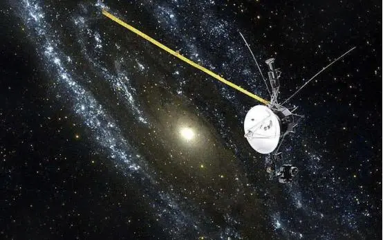
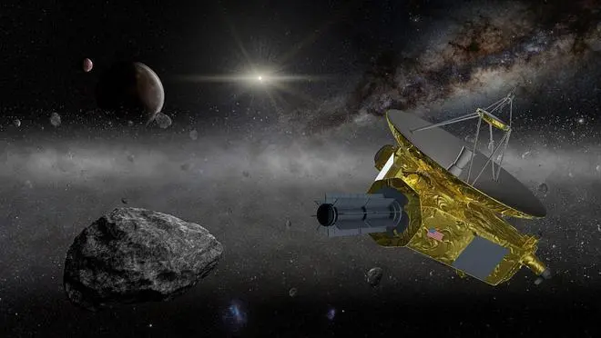
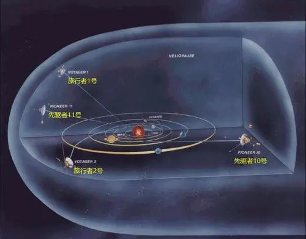

光的传播需要时间，所以我们看到的星光可能是它们几分钟前发出的，经过漫长的距离，然后有一束光线射入到我们的眼睛里。有些光也许是几百万年前发射出的，而在我们看到的时候，他们可能早已经不在了。 太阳系的形成大约始于46亿年前一个巨型星际分子云的引力坍缩。太阳系内大部分的质量都集中于太阳，余下的天体中，质量最大的是木星。八大行星逆时针围绕太阳公转。此外还有较小的天体位于木星与火星之间的小行星带。柯伊伯带和奥尔特云也存在大量的小天体。还有很多卫星绕转在行星或者小天体周围。小行星带外侧的每颗行星都有行星环。
太阳系认识过程：
在1977年发射的两个航天器，“旅行者1号”于2012年飞入星际，“旅行者2号”也于2018年加入。目前两个航天器和地球方面仍有交流。
美国国家航空航天局“新视野号”航天器目前正在海王星外名为“柯伊伯带”的寒冷区域进行探索，而最终它将离开太阳系。
“先驱者10号”和“先驱者11号”探测器最终也将在星际中默默旅行，数十年前它们已经耗尽了能源供应。


